- Installation and Setup
- Machine Learning Primer
- What's TensorFlow?
- Basic TensorFlow concepts
- MNIST Example
- Softmax
- Convoluted Neural Networks
Agenda
Agenda
NUS Hackers
NUS Hackers
- student-run organization committed to the spread of hacker culture & free/open-source software
- Events:
Installation and Setup
Installation and Setup
Ensure that you have the following installed:
- TensorFlow: https://www.tensorflow.org/install/
- Python 3: https://www.python.org/downloads/
- Jupyter (recommended): http://jupyter.org/
Materials are available here
Machine Learning Primer
Machine Learning Primer
What is Machine Learning?
What is Machine Learning?
- "The science of getting computers to act without being explicitly programmed" - Andrew Ng
- Primary aim is to allow computers to learn automatically without human intervention or assistance and adjust actions accordingly

Using TensorFlow to sort cucumbers
Using TensorFlow to sort cucumbers
- Makoto Koike used deeping learning and TensorFlow to sort cucumbers by size, shape, color and other attributes
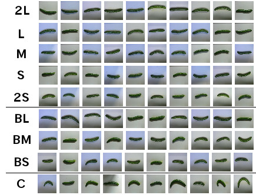
Structure in data
Structure in data
- some interpretations to "structure in data"
- given some data, one can predict other data points with some confidence
- one can compress the data, i.e., store the same amount of information, with less space
- we might say that \(A\) has apparent structure while \(B\) does not
Entropy
Entropy
- quantified as Entropy of Process
\[H(X) = -\sum_{i=1}^{N} p(x_i) \log p(x_i)\]
- If entropy increases, uncertainty in prediction increases
Entropy (examples)
Entropy (examples)
- Example: fair dice
\[H(\text{fair dice roll}) = -\sum_{i=1}^6 \frac{1}{6} \log \frac{1}{6}=2.58\]
- Example: biased 20:80 coin
\[H(20/80 \text{ coin toss}) = -\frac{1}{5}\log \frac{1}{5}-\frac{4}{5}\log \frac{4}{5} = 0.72\]
- biased coin toss has lower entropy; predicting its outcome is easier than a fair dice
What are Tensors?
What are Tensors?
Recall from linear algebra that:
- Scalar: an array in 0-D
- Vector: an array in 1-D
- Matrix: an array in 2-D
All are tensors of n-order. Similary, tensors can be transformed with operations. TensorFlow provides library of algorithms to perform tensor operations efficiently.
Example
Example
Simple linear regression model:
\[w_o + w_1 x = \hat{y}\]
- \(w_0\) and \(w_1\) are weights, that are determined during training
- \(\hat{y}\) is the predicted outcome, to be compared with actual observations \(y\)
- Goal: build a model that can find values of \(w_0\) and \(w_1\) that minimize prediction error
Graph Representation of ML Models
Graph Representation of ML Models
Can represent linear regression as a graph
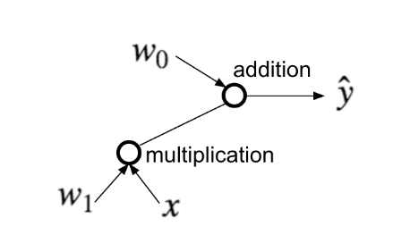
- operations are represented as nodes
- graph shows how data is transformed by nodes and what is passed between them
Graph Representation of ML Models (1)
Graph Representation of ML Models (1)
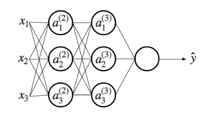
\[a_i^{(2)} = g(w_{i0} + w_{i1}x_1 + w_{i2}x_2 + w_{i3}x_3)\]
For more complex models, it could be helpful to visualize your graph. TensorBoard provides this virtualization tool
Activation Functions
Activation Functions
- A popular function is the rectified linear unit (ReLU):
\[g(u) = max(0, u)\]
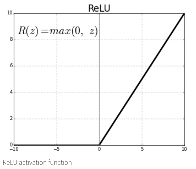
Gradient Descent
Gradient Descent
- a way to minimize objective function
- one takes steps proportional to the negative of the gradient of the function at the current point.
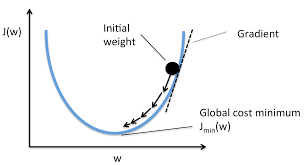
Model Output
Model Output
- output depends on activation function used, but is generally any real number \([-\infty, \infty]\)
- For binary classification, an additional sigmoid function can be applied to bring the output to range of \([0,1]\)
\[S(x) = \frac{1}{1+e^{-x}}\]

Softmax Function
Softmax Function
- for multi-class prediction a softmax function is used:
\[S_j(\boldsymbol{z}) = \frac{e^{z_j}}{\sum_{k=1}^K e^{z_k}} \text{ for }j=1,\dots,k\]
- squash \(K\) dimensional vector z to a \(K\) dimensional vector that sum to 1
\[\sum_{j=1}^k S_j(\boldsymbol{z}) = 1\]
- state usually represented with one-hot encoding, e.g for dice roll 3: \((0,0,1,0,0,0)\)
Basic TensorFlow Concepts
Basic TensorFlow Concepts
What is TensorFlow?
What is TensorFlow?
- "TensorFlow is an interface for expressing machine learning algorithms, and an implementation for executing such algorithms"
- Originally developed Google Brain Team to conduct machine learning research and deep neural networks research
- General enough to be applicable to a wide variety of other domains
Data Flow Graphs
Data Flow Graphs
Tensorflow separates definition of computations from their execution
Phases:
- assemble the graph
- use a
sessionto execute operations in the graph
import tensorflow as tf a = tf.add(3,5)
How to get value of a?
How to get value of a?
print(a)
Create a session, and within it, evaluate the graph
sess = tf.Session() print(sess.run(a)) sess.close()
Alternatively:
with tf.Session() as sess:
print(sess.run(a))
Visualizing with TensorBoard
Visualizing with TensorBoard
tf.summary.FileWriterserializes the graph into a format the TensorBoard can read
tf.summary.FileWriter("logs", tf.get_default_graph()).close()
- in the same directory, run:
tensorboard --logdir=logs
Or in Jupyter:
!tensorboard --logdir=logs
- This will launch an instance of TensorBoard that you can access at http://localhost:6006
Practice with More Graphs
Practice with More Graphs
Try to generate the following graph: \((x+y)^{xy}\) where \(x=2,y=3\)
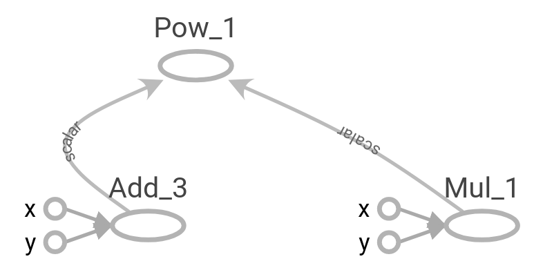
Useful functions: tf.add, tf.multiply, tf.pow
Solution
Solution
x = 2
y = 3
op1 = tf.add(x, y)
op2 = tf.multiply(x, y)
op3 = tf.pow(op1, op2)
with tf.Session() as sess:
op3 = sess.run(op3)
TensorFlow Variables
TensorFlow Variables
- TensorFlow variables used to represent shared, persistant state manipulated by your program
- Variables hold and update parameters in your model during training
- Variables contain tensors
- Variables must be initialized unless it is a constant
W1 = tf.ones((2,2))
W2 = tf.Variable(tf.zeros((2,2)), name="weights")
with tf.Session() as sess:
print(sess.run(W1))
sess.run(tf.global_variables_initializer())
print(sess.run(W2))
Creating Variables
Creating Variables
To create a 3-dimensional variable with shape [1,2,3]:
my_var = tf.get_variable("my_var", [1,2,3])
You may optionally specify the dtype and initializer to tf.get_variable:
my_int_variable = tf.get_variable("my_int_variable", [1, 2, 3],
dtype=tf.int32,
initializer=tf.zeros_initializer)
Can initialize a tf.Variable to have the value of a tf.Tensor:
other_variable = tf.get_variable("other_variable", dtype=tf.int32,
initializer=tf.constant([23, 42]))
Updating Variable State
Updating Variable State
Use tf.assign to assign a value to a variable
state = tf.Variable(0, name="counter")
new_value = tf.add(state, tf.constant(1))
update = tf.assign(state, new_value)
with tf.Session() as sess:
sess.run(tf.global_variables_initializer())
print(sess.run(state))
for _ in range(3):
sess.run(update)
print(sess.run(state))
Fetching Variable State
Fetching Variable State
input1 = tf.constant(3.0)
input2 = tf.constant(2.0)
input3 = tf.constant(5.0)
intermed = tf.add(input2, input3)
mul = tf.multiply(input1, intermed)
with tf.Session() as sess:
result = sess.run([mul, intermed])
print(result)
TensorFlow Placeholders
TensorFlow Placeholders
tf.placeholdervariables represent our input datafeed_dictis a python dictionary that mapstf.placeholdervariables to data
input1 = tf.placeholder(tf.float32)
input2 = tf.placeholder(tf.float32)
output = tf.multiply(input1, input2)
with tf.Session() as sess:
print(sess.run([output], feed_dict={input1:[7.], input2:[2.]}))
Example: Linear Regression
Example: Linear Regression
Imports
Imports
import tensorflow as tf import numpy as np import seaborn import matplotlib.pyplot as plt # %matplotlib inline
Recap
Recap
- we have two weights \(w_0\) and \(w_1\), we want the model to figure out good weights by minimizing prediction error
- define the following loss function
\[L = \sum (y - \hat{y})^2\]
Given the following function, fit a linear model
\[y = x + 20 \sin(x/10)\]
Scatter Plot
Scatter Plot
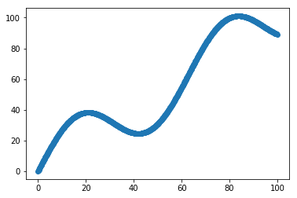
Define Variables and Placeholders
Define Variables and Placeholders
# Define data size and batch size n_samples = 1000 batch_size = 100 # TensorFlow is particular about shapes, so resize X_data = np.reshape(X_data, (n_samples, 1)) y_data = np.reshape(y_data, (n_samples, 1)) # Define placeholders for input X = tf.placeholder(tf.float32, shape=(batch_size, 1)) y = tf.placeholder(tf.float32, shape=(batch_size, 1))
Loss Function
Loss Function
Loss function is defined as: \[J(W,b) = \frac{1}{N}\sum_{i=1}^{N}(y_i-(W_{x_i}+b))^2\]
# Define variables to be learned
W = tf.get_variable("weights", (1,1),
initializer = tf.random_normal_initializer())
b = tf.get_variable("bias", (1,),
initializer = tf.constant_initializer(0.0))
y_pred = tf.matmul(X, W) + b
loss = tf.reduce_sum((y - y_pred)**2/n_samples)
Define Optimizer and Train Model
Define Optimizer and Train Model
# Define optimizer operation
opt_operation = tf.train.AdamOptimizer().minimize(loss)
with tf.Session() as sess:
# Initialize all variables in graph
sess.run(tf.global_variables_initializer())
# Gradient descent for 500 steps:
for _ in range(500):
# Select from random mini batch
indices = np.random.choice(n_samples, batch_size)
X_batch, y_batch = X_data[indices], y_data[indices]
# Do gradient descent step
_, loss_val = sess.run([opt_operation, loss],
feed_dict={X: X_batch, y: y_batch})
print(sess.run([W, b]))
# Display results
plt.scatter(X_data, y_data)
plt.scatter(X_data, sess.run(W) * X_data + sess.run(b), c='g')
Results
Results
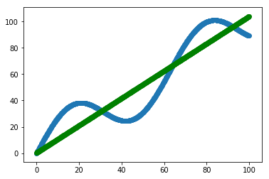
MNIST and TensorFlow
MNIST and TensorFlow
Introduction
Introduction
- MNIST is the hello world of machine learning
- Simple computer vision dataset, consists of images of handwritten digits
- We are going to train a model to predict what the digits are

Importing MNIST Data
Importing MNIST Data
To download and read in the data automatically:
from tensorflow.examples.tutorials.mnist import input_data
mnist = input_data.read_data_sets("MNIST_data/", one_hot=True)
One hot encoding
- labels have been converted to a vector of length equal to number of classes.
- the ith element is 1, rest are 0. E.g. Digit 1: \([0,1,\dots]\)
MNIST Data
MNIST Data
The MNIST data is split into three parts:
- 55,000 data points of training data (
mnist.train) - 10,000 data points of test data (
mnist.test) - 5,000 data points of validation data (
mnist.validation)
Every MNIST data has 2 parts:
- an image of a handwritten digit (call it "x")
- corresponding label (call it "y")
Softmax Regression
Softmax Regression
Overview
Overview
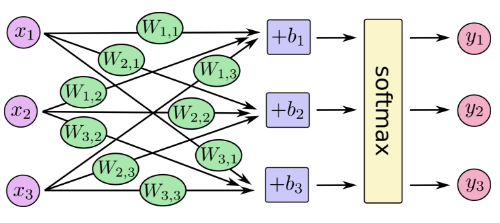
Overview (1)
Overview (1)
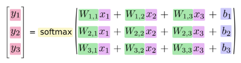
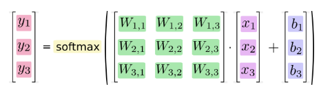
Data Dimensions
Data Dimensions
img_size = 28 img_size_flat = img_size * img_size img_shape = (img_size, img_size) num_classes = 10
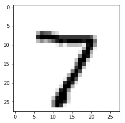
Defining Our Model
Defining Our Model
x = tf.placeholder(tf.float32, [None, img_size_flat]) y_true = tf.placeholder(tf.float32, [None, num_classes]) y_true_cls = tf.placeholder(tf.int64, [None])
xis aplaceholder, value that we will input when we ask TensorFlow to run- represent MNIST image as a 2-D tensor of floating numbers of shape
[None, 784] Nonemeans thatxcan be of any length
Variables to be Optimized
Variables to be Optimized
weights = tf.Variable(tf.zeros([img_size_flat, num_classes])) biases = tf.Variable(tf.zeros([num_classes]))
- weights has a shape of
[784,10]as we want to 784-dimensional image vectors byweightsto produce 10-dimensional vectors of evidence - biases has a shape of [10] as we can add it to the output.
Model
Model
- multiples the images in the placeholder variable
xwithweightandbiases - Result is a matrix of shape
[num_images, 10]andWhas shape[784, 10]. logitsis typical TensorFlow terminology
logits = tf.matmul(x, weights) + biases y_pred = tf.nn.softmax(logits) y_pred_cls = tf.argmax(y_pred, axis = 1)
Optimization Method
Optimization Method
cross_entropy = tf.nn.softmax_cross_entropy_with_logits(logits=logits,
labels=y_true)
cost = tf.reduce_mean(cross_entropy)
optimizer = tf.train.GradientDescentOptimizer(learning_rate=0.5).minimize(cost)
correct_prediction = tf.equal(y_pred_cls, y_true_cls)
accuracy = tf.reduce_mean(tf.cast(correct_prediction, tf.float32))
TensorFlow Run
TensorFlow Run
def optimize(num_iterations):
for i in range(num_iterations):
x_batch, y_true_batch = mnist.train.next_batch(batch_size)
feed_dict_train = {x: x_batch,
y_true: y_true_batch}
session.run(optimizer, feed_dict=feed_dict_train)
Using small batches of random data is called stochastic training, it is more feasible than training on the entire data set
Evaluating Our Model
Evaluating Our Model
feed_dict_test = {x: mnist.test.images,
y_true: mnist.test.labels,
y_true_cls: mnist.test.cls}
def print_accuracy():
# Use TensorFlow to compute the accuracy.
acc = session.run(accuracy, feed_dict=feed_dict_test)
# Print the accuracy.
print("Accuracy on test-set: {0:.1%}".format(acc))
Approx 91% is very bad, 6 digit ZIP code would have an accuracy rate of 57%
Convolutional Neural Network
Convolutional Neural Network
Flowchart
Flowchart

Introduction
Introduction
- Convolutional Networks work by moving smaller filter across the input image
- Filters are re-used for recognizing patters throughout the entire input image
- This makes Convolutional Networks much more powerful than Fully-Connected networks with the same number of variables
Features
Features
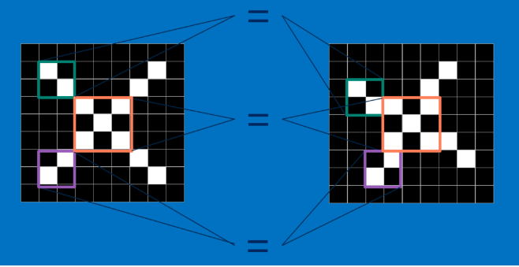
Features (1)
Features (1)
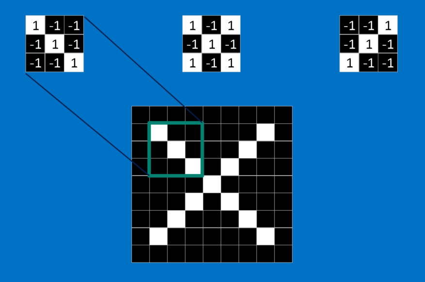
Convolution
Convolution

Convolution (1)
Convolution (1)
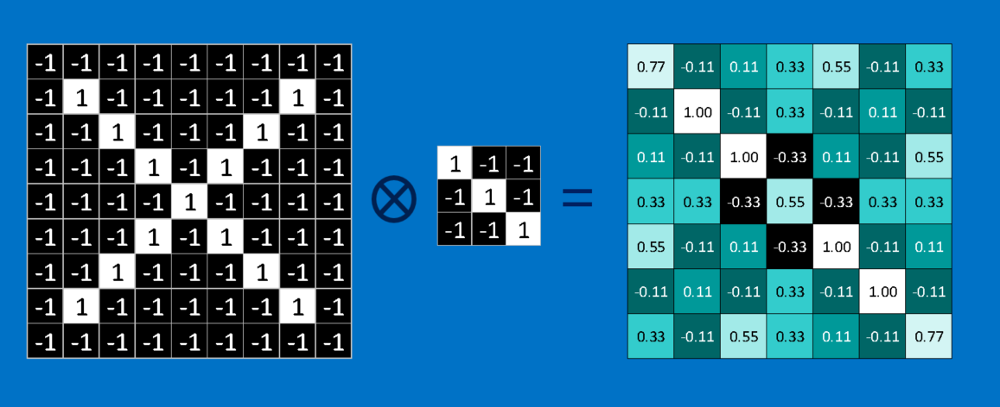
Convolution (2)
Convolution (2)

Pooling
Pooling

Pooling (1)
Pooling (1)
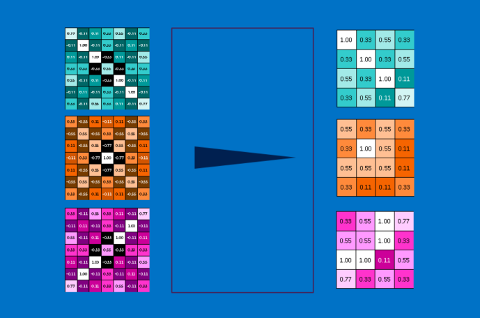
Fully Connected Layers
Fully Connected Layers
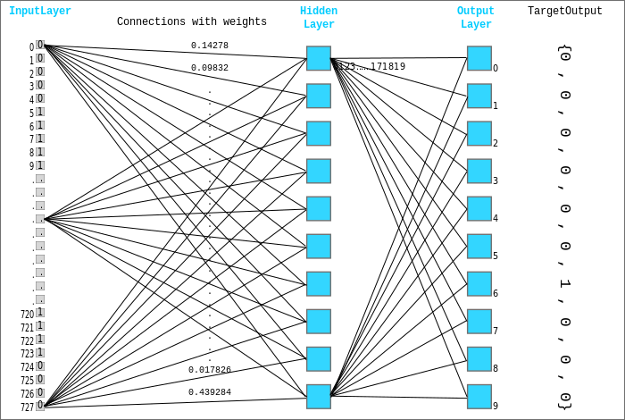
Hyper Parameters
Hyper Parameters
- Convolution:
- Number of features
- Size of features
- Pooling
- Window size
- Window stride
- Fully Connected
- number of neurons
Weight Initialization
Weight Initialization
Helper functions to create ReLU neurons
def weight_variable(shape):
initial = tf.truncated_normal(shape, stddev=0.05)
return tf.Variable(initial)
def new_biases(length):
return tf.Variable(tf.constant(0.05, shape=[length]))
Creating a new Convolutional Layer
Creating a new Convolutional Layer
Input is a 4-dim tensor:
- image number
- y-axis of each image
- x-axis of each image
- channels of each image
Output is another 4-dim tensor:
- image number, same as input
- y-axis of each image, might be smaller if pooling is used
- x-axis of each image, might be smaller if pooling is used
- channels produced by the convolutional filters
Helper Function for Creating a New Layer
Helper Function for Creating a New Layer
def new_conv_layer(input, # The previous layer.
num_input_channels, # Num. channels in prev. layer.
filter_size, # Width and height of each filter.
num_filters, # Number of filters.
use_pooling=True): # Use 2x2 max-pooling.
# ...
return layer, weights
Flattening a Layer
Flattening a Layer
- convolutional layer produces an output tensor with 4 dimensions
- fully connected layer will reduce 4-dim tensor to a 2-dim tensor that can be used as input to the fully connected layer
def flatten_layer(layer):
# ...
# return both the flatten layer and number of features
return layer_flat, num_features
Creating a Fully-Connected Layer
Creating a Fully-Connected Layer
Assumed that input is a 2-dim tensor of shape [num_images, num_inputs], output is a 2-dim tensor of shape [num_images, num_outputs]
def new_fc_layer(input, # The previous layer.
num_inputs, # Num. inputs from prev. layer.
num_outputs, # Num. outputs.
use_relu=True): # Use Rectified Linear Unit (ReLU)?
# create new weights and biases
# calculate new layer
# use ReLU?
return layer
Placeholder Variables
Placeholder Variables
xis the placeholder variable for input images- data-type is set to
float32 - shape is set to
[None, img_size_flat]
- data-type is set to
- convolutional layers expect
xto be encoded as a 4-dim tensor, so its shape is[num_images, img_height, img_width, num_channels] - also have placeholder for true labels
x = tf.placeholder(tf.float32, shape=[None, img_size_flat], name='x') x_image = tf.reshape(x, [-1, img_size, img_size, num_channels]) y_true = tf.placeholder(tf.float32, shape=[None, num_classes], name='y_true') y_true_cls = tf.argmax(y_true, axis=1)
First Convolutional Layer
First Convolutional Layer
- takes
x_imageas input and createsnum_filters1different filters- each filter has width and height equal to filtersize1=
- down sample the image so its half the size by using max-pooling
layer_conv1, weights_conv1 = \
new_conv_layer(input=x_image,
num_input_channels=num_channels,
filter_size=filter_size1,
num_filters=num_filters1,
use_pooling=True)
Second Convolutional Layer
Second Convolutional Layer
- takes as input the output from the first convolutional layer
- number of iunput channels = number of filters in the first convolutional layer
layer_conv2, weights_conv2 = \
new_conv_layer(input=layer_conv1,
num_input_channels=num_filters1,
filter_size=filter_size2,
num_filters=num_filters2,
use_pooling=True)
Flatten Layer
Flatten Layer
- use output of convolutional layer as input to a fully-connected network, which requires for the tensors to be reshaped to a 2-dim tensors
layer_flat, num_features = flatten_layer(layer_conv2)
Fully-Connected Layer 1
Fully-Connected Layer 1
layer_fc1 = new_fc_layer(input=layer_flat,
num_inputs=num_features,
num_outputs=fc_size,
use_relu=True)
Fully-Connected Layer 2
Fully-Connected Layer 2
layer_fc2 = new_fc_layer(input=layer_fc1,
num_inputs=fc_size,
num_outputs=num_classes,
use_relu=False)
Cost Function and Optimization Method
Cost Function and Optimization Method
y_pred = tf.nn.softmax(layer_fc2)
y_pred_cls = tf.argmax(y_pred, axis=1)
cross_entropy = tf.nn.softmax_cross_entropy_with_logits(logits=layer_fc2,
labels=y_true)
cost = tf.reduce_mean(cross_entropy)
optimizer = tf.train.AdamOptimizer(learning_rate=1e-4).minimize(cost)
correct_prediction = tf.equal(y_pred_cls, y_true_cls)
accuracy = tf.reduce_mean(tf.cast(correct_prediction, tf.float32))
Saving and Restoring your model
Saving and Restoring your model
Exporting the Model
Exporting the Model
- We can export the model for use in our own applications
- use
tf.train.Saverto save the graph and the trained weights
model_path = "./tmp/model.ckpt"
save_path = saver.save(sess, model_path) # saver is not declared???
print("Model saved in file: %s" % save_path)
Restoring the Session
Restoring the Session
saver = tf.train.Saver()
model_path = "./tmp/model.ckpt"
with tf.Session() as sess:
sess.run(tf.global_variables_initializer())
saver.restore(sess, model_path)
print("Accuracy:", accuracy.eval({x: mnist.test.images, y_: mnist.test.labels}))
Toy Program
Toy Program
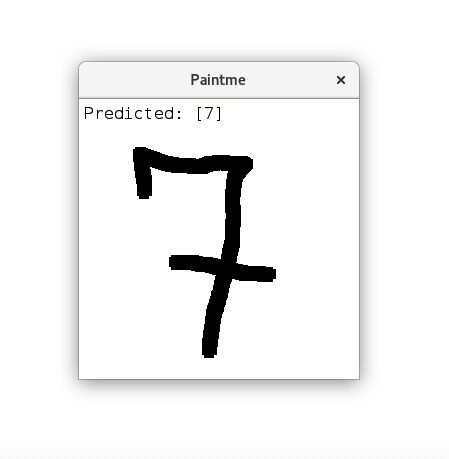
References
References
Thank You